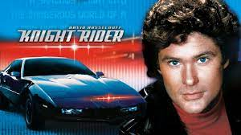
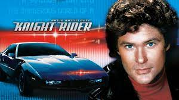

A SUPERMAQUINA
- O ator alemão (!?) David Hasselhoff ganhou seu famoso status galhofeiro graças ao seriado S.O.S. Malibu (Baywatch), no qual interpretava o líder dos salva-vidas heroicos. Bem antes disso, no entanto, ele já marcava seu nome nos anais da TV americana e mundial no programa A Supermáquina. A série fez um enorme sucesso por aqui graças às reprises na TV aberta, mas não ficou no ar por tanto tempo assim. Estreando em 1982, o programa durou “apenas” 4 temporadas, até 1986. Criado por Glen A. Larson (o mesmo de Magnum – que veremos mais adiante na lista), o seriado trazia Hasselhoff contracenando… com um carro! Mas não era um veículo qualquer, a “supermáquina” do título era um equipamento de última geração com direito a inteligência artificial (já naquela época) e até sintetizador de voz, chamado K.I.T.T. – um automóvel da marca Pontiac Firebird Trans Am preto.
 
